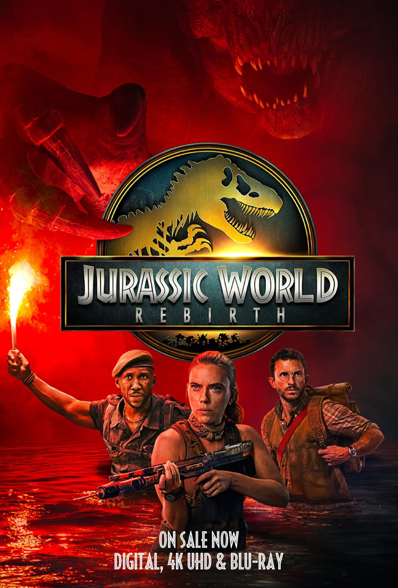

Uma nova era nasce. Neste verão, três anos após o término da trilogia Jurassic World , com cada filme ultrapassando US$ 1 bilhão em bilheteria mundial, a consagrada série Jurassic evolui em uma nova e engenhosa direção com Jurassic World Rebirth .
Estrelado pela icônica superestrela de ação Scarlett Johansson, pelo indicado ao Emmy e ao SAG Jonathan Bailey e pelo duas vezes vencedor do Oscar® Mahershala Ali, este novo capítulo repleto de ação acompanha uma equipe de resgate em uma corrida para o lugar mais perigoso da Terra: uma ilha que abriga uma instalação de pesquisa do Jurassic Park original , habitada pelos piores dos piores que restaram.
Com a participação dos aclamados astros internacionais Rupert Friend e Manuel Garcia-Rulfo, o filme é dirigido pelo dinâmico diretor visual Gareth Edwards ( Rogue One: Uma História Star Wars ) a partir de um roteiro do roteirista original de Jurassic Park, David Koepp.
Cinco anos após os eventos de Jurassic World: Domínio, a ecologia do planeta provou ser em grande parte inóspita para os dinossauros. Os que restaram vivem em ambientes equatoriais isolados, com climas semelhantes àquele em que outrora prosperaram. As três criaturas mais colossais da terra, do mar e do ar, dentro dessa biosfera tropical, detêm, em seu DNA, a chave para um medicamento que trará benefícios milagrosos e salvará vidas da humanidade.
A atriz indicada ao Oscar®, Johansson, interpreta Zora Bennett, uma especialista em operações secretas contratada para liderar uma equipe especializada em uma missão ultrassecreta para obter material genético. Quando a operação de Zora se cruza com a de uma família civil cujo passeio de barco foi arruinado por dinossauros aquáticos, todos se veem presos em uma ilha proibida que outrora abrigou uma instalação de pesquisa secreta para o Parque Jurássico. Lá, em um território povoado por dinossauros de espécies muito diferentes, eles se deparam com uma descoberta sinistra e chocante, mantida em segredo do mundo por décadas.
Ali interpreta Duncan Kincaid, o membro mais confiável da equipe de Zora; Jonathan Bailey ( Wicked, Bridgerton ), vencedor do Critics Choice Award e do Olivier Award, interpreta o paleontólogo Dr. Henry Loomis; Rupert Friend ( Homeland, Obi-Wan Kenobi ), indicado ao Emmy, aparece como Martin Krebs, representante da indústria farmacêutica; e Manuel Garcia-Rulfo ( O Advogado de Lincoln, Assassinato no Expresso do Oriente ) interpreta Reuben Delgado, o pai da família civil náufraga.
O elenco inclui Luna Blaise ( Manifest ), David Iacono ( The Summer I Turned Pretty ) e Audrina Miranda ( Lopez vs. Lopez ) como a família de Reuben. O filme também conta com Philippine Velge ( Station Eleven ), Bechir Sylvain ( BMF ) e Ed Skrein (Deadpool) como membros das equipes de Zora e Krebs .
Jurassic World: Renascimento é dirigido por Edwards, vencedor do BAFTA, com roteiro de Koepp ( Guerra dos Mundos ), baseado em personagens criados por Michael Crichton. O filme é produzido por Frank Marshall, indicado ao Oscar®, e Patrick Crowley, ambos produtores veteranos da franquia Jurassic e do sucesso de bilheteria do verão passado, Twisters . A produção executiva é de Steven Spielberg, Denis L. Stewart e Jim Spencer.